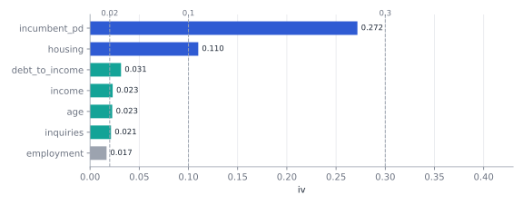

1. 数据与样本#
项目从 2024 年的贷款申请及其审批决定开始。本章加载这些申请，剔除被政策规则拒绝的申请，把获批申请分为开发样本和时间更晚的验证样本，并对每个候选变量做初步分析。
加载申请数据#
make_applications() 每笔申请返回一行。模拟的申请没有日期，因此示例按行的顺序把它们平均分配到 2024 年的十二个月中：
>>> import numpy as np
>>> import pandas as pd
>>> from kivi.datasets import make_applications
>>> applications = make_applications(n_applicants=40000, rng=0)
>>> months = pd.period_range("2024-01", periods=12, freq="M")
>>> applications["month"] = months[np.arange(40000) * 12 // 40000]
>>> applications.head(3).T
0 1 2
age 41 39 47
income 3500.0 2630.0 3100.0
debt_to_income 0.21 0.61 0.28
inquiries 0 1 1
housing rent rent own
employment temporary permanent permanent
incumbent_pd 0.1095 0.2349 0.124
policy_decline False True False
approved True False True
target 0 1 0
month 2024-01 2024-01 2024-01
incumbent_pd 是供应商评分卡给出的 PD， policy_decline 标记被政策规则拒绝的申请， approved 标记贷款机构批准的申请。借款人在表现期内违约时 target 为 1。
划分样本#
政策拒绝与评分无关，因此不在这些申请上开发评分卡：无论评分如何，它们都会被拒绝。其余申请为 合格申请 。供应商评分卡批准其中 PD 低于 15% 的合格申请，即 获批申请人 ，拒绝其余的，即 拒绝申请人 ：
>>> pd.crosstab(applications["policy_decline"], applications["approved"])
approved False True
policy_decline
False 10001 27012
True 2987 0
>>> eligible = applications[~applications["policy_decline"]]
>>> accepts = eligible[eligible["approved"]]
模型在 1 月至 9 月的获批申请人上开发，10 月至 12 月的获批申请人则留作跨时间验证，就像投产的模型总是应用于开发样本之后的申请一样。开发月份的拒绝申请人将在 拒绝推断 中进入项目：
>>> development = accepts[accepts["month"] <= "2024-09"]
>>> validation = accepts[accepts["month"] >= "2024-10"]
>>> rejects = eligible[~eligible["approved"] & (eligible["month"] <= "2024-09")]
>>> pd.DataFrame(
... {
... "applications": [len(development), len(validation), len(rejects)],
... "event_rate": [development["target"].mean(), validation["target"].mean(), np.nan],
... },
... index=["development", "validation", "rejects"],
... ).round(3)
applications event_rate
development 20227 0.101
validation 6785 0.106
rejects 7545 NaN
两个样本中都约有十分之一的获批借款人违约。拒绝申请人的结果未知：他们从未拿到贷款。
模拟核对
模拟的拒绝申请人确实有结果。他们的违约频率是获批申请人的三倍，部分原因是供应商评分卡看到了申请表中没有的征信数据：
>>> print(f"{rejects['target'].mean():.3f}")
0.295
分析候选变量#
候选变量包括申请表上的六个字段和供应商的 PD。 profile_table() 在开发样本上为每个变量给出一行，包括其分布和快速分箱的 IV；见 单变量概况 ：
>>> from kivi.univariate import profile_table
>>> features = ["age", "income", "debt_to_income", "inquiries", "housing", "employment", "incumbent_pd"]
>>> profile = profile_table(development[features], development["target"])
>>> profile[["kind", "distinct", "missing", "top_share", "iv", "tied_bins"]].round(3)
kind distinct missing top_share iv tied_bins
variable
age numeric 55 0 0.039 0.023 False
income numeric 1049 0 0.004 0.023 False
debt_to_income numeric 61 0 0.031 0.031 False
inquiries numeric 7 0 0.471 0.021 True
housing categorical 3 0 0.399 0.110 False
employment categorical 3 0 0.719 0.017 False
incumbent_pd numeric 1378 0 0.002 0.272 False

开发样本上各候选变量快速分箱的 IV。供应商的 PD 遥遥领先；申请表上的字段单独来看都较弱。#
这份概况决定了接下来几章的做法：
没有变量存在缺失值或特殊编码，因此都不需要为它们单独设组。
incumbent_pd是最强的候选变量，其次是housing。申请表上的其他字段 IV 在 0.017 到 0.031 之间：单独来看较弱，但可能为供应商的 PD 补充信息。获批申请人是经过筛选的样本：供应商评分卡拒绝了风险最高的申请，因此在获批申请人中，每个变量对结果的区分都弱于在全部申请人中。
inquiries在tied_bins中被标记：将近一半的申请人没有查询记录，因此它的等频分箱会塌缩。 分箱与 WOE 为它指定了边界。
交易流水特征 从申请人的账户中提取更多候选变量，项目把它们留给评分卡的下一个版本； 分箱与 WOE 对上面七个候选变量分箱。